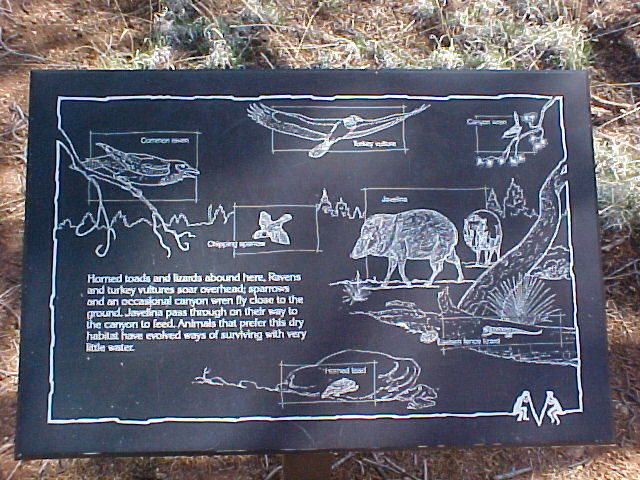

| Evolution on Vacation - May 2004 |
| by Do-While Jones |
|
 |
The text on the sign says,
| Horned toads and lizards abound here. Ravens and turkey vultures soar overhead. Sparrows and an occasional canyon wren fly closer to the ground. Javelina pass through on their way to the canyon to feed. Animals that prefer this dry habitat have evolved ways of surviving with very little water. |
Imagine the outcry there would be if the last sentence said, "God created animals that have ways of surviving with very little water to live in this dry habitat."
There is no need to make religious statements of any kind on a sign like this. The last statement should have been, "Animals that live in this dry habitat can survive with very little water."
Although there are animals that can survive with very little water, there is no evidence that any animal has ever evolved the ability to survive with very little water. It is more plausible from a scientific point of view that animals that can survive with very little water have always had the ability to survive with very little water.
The sign seems factual because it begins with statements of fact. The animals shown on the sign really do inhabit the canyon. That's a fact. But then the sign sneaks in some evolutionary speculation as if the speculation were fact, too. Don't be fooled.
| Quick links to | |||
|---|---|---|---|
| Science Against Evolution Home Page |
Back issues of Disclosure (our newsletter) |
Web Site of the Month |
Topical Index |